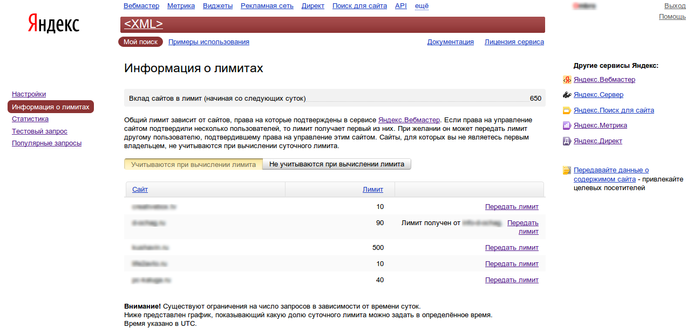

Details
Written by Dmitiry Kushavin
Category: Статьи
Published: 24 January 2013
Hits: 9845
Для многих вебмастеров и владельцев блогов существует задача проверять позиции сайта в поисковых системах по определённым позициям. Для этого можно использовать специализированные сервисы, но они требуют оплату за свои услуги и это напрягает. Но есть способ проверять позиции в Яндексе своими силами. Для этого Вам потребуется PHP хостинг и наличие сайта в Яндекс вебмастер.
Яндекс позволяет работать с запросами к поисковой системе с использовании XML запросов, это достаточно удобно, так как XML достаточно просто обрабатывать. Именно такими запросами мы и можем запрашивать и обрабатывать результаты поисковой выдачи.
Если вы считаете себя вебмастером, то у вас должен быть аккаунт Яндекс с панелью вебмастера, куда Вы добавили свои сайты. Если это так, то по этой ссылке у вас будет доступны так называемые “лимиты”. Чем круче у Вас сайт, тем больше суточных лимитов у вас будет. Как пример: у моего блога (на момент написания: 400 страниц в поиске, 10 ТИЦ, 300+ посетителей в сутки) суточный лимит ровняется 500 запросам.

Лимиты можно передавать, рядом с количеством лимита есть кнопка “передать лимит”, нажмите её и передайте лимит самому себе. Теперь у вас будет показываться в разделе статистика количество Ваших суточных лимитов. Начнут действовать они на следующие сутки, плюс в течении дня можно будет использовать лишь 10% от вашего лимита, а всё остальное только в вечернее и ночное время.
Сам скрипт я нашёл на просторах интернета и автор его мне не известен, однако нормально работающий скрипт попался мне только с десятой попытке, поэтому я и решил его перевыложить.
Для скрипта вам понадобится файл с перечислениями ключевых слов в UTF-8, файл скрипта, хостинг с поддержкой PHP. На хостинге создаём директорию и записываем туда наши файлы. txt с ключевыми словами сами составите, а вот и сам скрипт:
<?
$keywords = file(‘words.txt’); //файл с ключевыми словами
$site =’ВАШ_ДОМЕН‘;
header (“Content-Type: text/html;charset=utf-8″);
foreach($keywords as $word)
showPlaseYandex($site, $word);
function showPlaseYandex($host, $query)
{
$host = preg_replace(“[^http://|www\.]“, ”, $host);
$query_esc = htmlspecialchars($query);
$host_esc = htmlspecialchars($host);
$page = 0;
$found = 0;
$pages = 5;
$error = false;
$exit = false;
while (!$exit && $page < $pages && $host)
{
// XML запрос
$doc = <<<DOC
<?xml version=’1.0′ encoding=’utf-8′?>
<request>
<query>$query_esc</query>
<page>$page</page>
<maxpassages>0</maxpassages>
<groupings>
<groupby attr=’d’ mode=’deep’ groups-on-page=’10′ docs-in-group=’1′ curcateg=’-1′/>
</groupings>
</request>
DOC;
$context = stream_context_create(array(
‘http’ => array(
‘method’=>”POST”,
‘header’=>”Content-type: application/xml\r\n” .
“Content-length: ” . strlen($doc),
‘content’=>$doc
)
));
$response = file_get_contents(‘http://xmlsearch.yandex.ru/xmlsearch?user=USER&key=00.0000000:00000000000000000000000000000000&lr=6‘, true, $context); //lr=6 это указание региона для поиска, замените шестёрку на код вашего региона. Остальная часть строки обязательно заменяется на ту, которую вам выдали в xml.yandex.ru!!!!!
if ( $response ) {
$xmldoc = new SimpleXMLElement($response);
$xmlresponce = $xmldoc->response;
if ($xmlresponce->error) {
print “Возникла следующая ошибка: ” . $xmlresponce->error . “<br/>\n”;
$exit = 1;
$error = true;
break;
}
$pos = 1;
$nodes = $xmldoc->xpath(‘/yandexsearch/response/results/grouping/group/doc/url’);
foreach ($nodes as $node) {
// если URL начинается с имени хоста, выходим из цикла
if ( preg_match(‘/^http:\/\/(www\.)?’.$host.’/ui’, $node) ) {
$found = $pos + $page * 10;
$exit = 1;
break;
}
$pos++;
}
$page++;
} else {
print “внутренняя ошибка сервера\n”;
$exit = 1;
}
}
if (!$error) {
if ($found) {
$found = colorate($found);
print “<p>сайт «$host » находится на месте № $found по запросу «$query »</p>”;
} elseif ($host) {
print “<p>сайт «$host » находится далее, чем на “. $pages*10 .” месте в выдаче «Яндекса»”;
print” по запросу «$query »</p>\n”;
}
}
}
function colorate($int)
{
$color = ‘#FF0000′; //красный
if($int<=10)
$color = ‘#008E00′; //зеленый
if($int>10 && $int<=20)
$color = ‘#FFE500′; //желтый
return ‘<span style=”color: ‘ . $color . ‘”>’ . $int . ‘</span><br />’;
}
Не забываем заполнить поля с доменом и адрес для выполнения запросов (выдаётся на http://xml.yandex.ru/settings.xml). Всё можно пользоваться. Информация актуальна на ноябрь 2013 года. Проверенно.